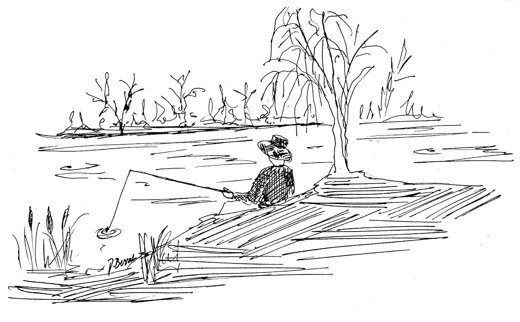

Ribar
The Fisherman

Nepomično sjediu obliku žbuna.S tihom se obalomstapaju alasi.Il' peca sa čunanapet kao struna.Zajedno sa čunomnjišu ga talasi.
Motionless he's sitting,shaped like a bush, bent low;along the quiet bankthe anglers melt from view.Or where the waters flow,he fishes, taut as a bow,and the waves are rockingboth him and his canoe.
S valima se vjetarnježno poigrava.Negdje cvrčak cvrči,u travi se skriva.Dok se magla diže,topola se njiše.Dotle svaki ribarvel'ku ribu sniva.
The wind is gently playingwith the little waves;somewhere a cricket's chirping,hid where the grasses swish;and while the mist ascends,the poplar sways and bends;and every angler, meanwhile,dreams of a great big fish.
Kad se plovak trza,on već spremno čuči.Sve je svoje brigebacio u vodu,a niti ga mučikad će doći kući.Kako žabe hvata,gleda bijelu rodu.
When the float starts twitching,he's crouched, poised for the bite;every care he hadhe's tossed into the drink,nor does he care a mitewhen he'll get home tonight.He watches the white storkcatch frogs along the brink.
Kad se kući vratimokar i bez ribe,naveliko svojeon raspreda priče.Avaj, bolni jadejedna mi otpade.Pet kila je bila!Ushićeno kliče!
When he's back, at last,soaking wet, no fish,at great length, and grandly,he spins tales to the skies:"Alas, oh bitter woe,one got away! Oh no!Five kilos, it weighed in!"he cries with shining eyes.
Valpovo, 1986.
Valpovo, 1986